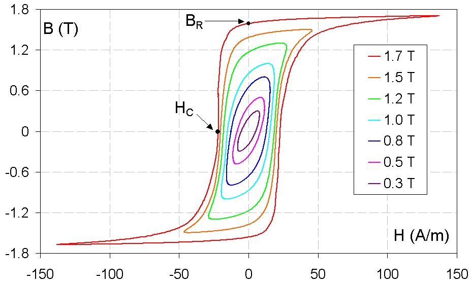
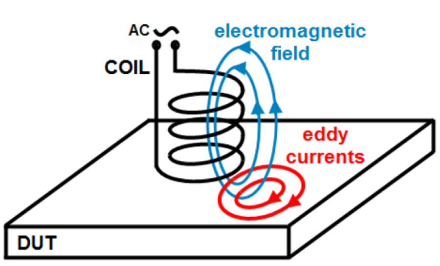
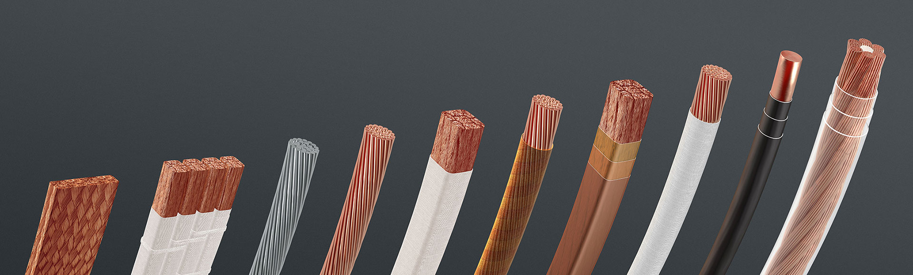
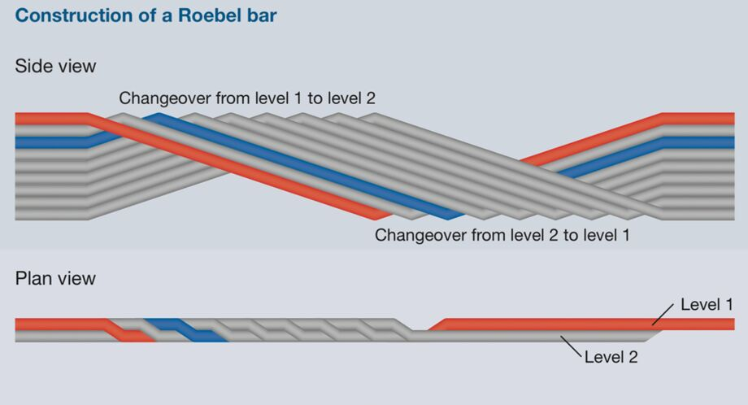
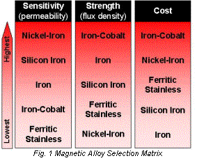

class: center, middle ### EÜAŞ - ODTÜ Elektrik EGEN Generatör Tasarımı ve İmalatı Projesi # Elektromanyetik Sistemler ## Ozan Keysan [keysan.me](http://keysan.me) Office: C-113 <span class="meta">•</span> Tel: 210 7586 --- # Elektriksel / Manyetik Malzemeler ## Elektriksel Malzemeler -- ## İletkenler: -- Bakır, Alüminyum, Demir... -- ## Yalıtkanlar: Plastikler, Hava... --- # Elektriksel Malzemeler # En iyi iletkenliğe sahip metal hangisidir? -- - ## **Bakır:** \\(1.68 \; 10^{-8} \; \Omega.m \\) -- - ## **Alüminyum:** \\(2.82\; 10^{-8} \; \Omega.m \\) -- - ## **Gümüş:** \\(1.59 \; 10^{-8} \; \Omega.m \\) -- - ## **Altın:** \\(2.44 \; 10^{-8} \; \Omega.m \\) --- # Manyetik Malzemeler -- ## İletkenler --> -- Ferromanyetik malzemeler: -- ## (Demir, Kobalt vb.) ### Yüksek manyetik geçirgenlik (permeability) ( `\(\mu_r >> 1\)`) <img src="https://c1.staticflickr.com/3/2716/4468925382_6c3ceecbfe.jpg" alt="Drawing" style="width: 400px;"/> --- # Manyetik Malzemeler ## Yalıtkanlar --> Manyetik olmayan malzemeler -- ### (Plastik, Hava, Bakır, Alüminyum) ### Manyetik Geçirgenlik ( `\(\mu_r \approx 1\)`) --- # Manyetik Devreler ### Manyetik devreler ile elektrik devreleri aynı temel prensiplere sahiptir. <img src="magnetic_electric_circuit.png" alt="Drawing" style="width: 800px;"/> --- ## Manyetik Devreler : Elektrik Devreler ### Akı (Flux), (Weber: Wb) --> Akım (Amper) -- ### Akı Yoğunluğu (Wb/m\\(^2\\), T) --> Akım yoğunluğu (A/m\\(^2\\)) -- ### Elektrik Alan (V/m) --> Manyetik Alan (A/m) -- ### Elektromotor kuvvet (V) --> Manyetomotor kuvvet (A) --- # Maxwell Denklemleri: #### $$\textrm{Gauss' Law}\quad \nabla \cdot \vec{E} = \frac{\rho}{\varepsilon_0} $$ #### $$\textrm{Gauss' Law ($\vec{B}$ Fields)} \quad \nabla \cdot \vec{B} = 0 $$ #### $$\textrm{Faraday's Law} \quad \nabla \times\quad \vec{E} = - \frac{\partial \vec{B}}{\partial t}$$ #### $$\textrm{Ampere's Law} \quad \nabla \times \vec{B} = \mu_0 \vec{J} + \mu_0\varepsilon_0\frac{\partial \vec{E}}{\partial t}$$ ####Detaylı okuma: #### - [Maxwell Denklemleri](http://www.maxwells-equations.com/) #### - [Maxwell denklemlerinden kim korkar?](http://majr.com/docs/Whos_Afraid_of_Maxwells_Equations_By_Elya_Joffe.pdf) --- # Ampere Denklemi ### \\(\oint\_C {\vec{H}.d\vec{\ell}} = \iint\_{closed S} \vec{J}dA = \sum I\_n = NI \\) #### Magnetic alan yoğunluğu (H) malzeme özelliklerinden bağımsızdır.  --- # Ampere Denklemi ### Senkron makinelerde hava aralığındaki manyetik alan yoğunluğu --- ### Elektriksel Direnç, Manyetik Relüktans ## Electriksel Direnç: # \\(\quad R = \frac{\rho l}{A} = \frac{l}{\sigma A}\\) ### \\(l\\): Uzunluk (m) ### \\(A\\): Kesit Alanı (m2) ### \\(\rho\\): Özdirenç (\\(\Omega m\\)), \\(\quad \sigma\\): İletkenlik (S/m) --- # Ohm Denklemi ( Manyetik Devreler İçin) ## Elektriksel Devreler: \\(\quad \quad V=IR\\) -- ## Manyetik Devreler: \\( \quad \quad \mathcal{F} = \Phi \mathcal{R} \\) -- ## Manyetik Relüktans: \\(\quad \quad \mathcal{R} = \frac{l}{\mu A}\\) ### \\(l\\): Uzunluk (m) ### \\(A\\): Kesit Alanı (m2) ### \\(\mu\\): Manyetik Geçirgenlik (H/m) --- ## Akım Yoğunluğu vs. Manyetik Alan Yoğunluğu ## Akım Yoğunluğu = İletkenlik x Elektrik Alan Şiddeti ## $$\vec{J}=\sigma \vec{E}$$ -- ### Manyetik Alan Yoğunluğu = Geçirgenlik x Magnetic Alan Şiddeti ## $$\vec{B} = \mu \vec{H}$$ --- # Manyetik Geçirgenlik (Permeability) ## Havanın manyetik geçirgenliği: ## $$\mu_0 = 4 \pi 10^{-7} \quad H/m$$ -- ## Nispi Geçirgenlik (\\(\mu_r\\)): Havaya göre manyetik geçirgenlik oranı ## $$\mu = \mu_o . \mu_r$$ --- ## Örnek Soru #### Aşağıdaki manyetik nüvenin relüktansını hesaplayınız. #### \\(\mu_r=4000\\), \\(l=500 mm\\), \\(A_c=2500mm^2\\).  --- ## Örnek Soru #### Bu sefer hava aralığı (3 mm) eklenmiş durumda relüktansı hesaplayınız.  -- #### 5 turluk bobine, 10 A akım verildiği durumda hava aralığı manyetik yoğunluğunu hesaplayınız. -- #### Akım miktarını iki katına çıkarırsak, manyetik alan yoğunluğu nasıl değişir? --- # B - H Karakteristikleri -- ## $$\vec{B} = \mu \vec{H} $$ ### \\( B\\): Manyetik alan yoğunluğu (Tesla) ### \\( \mu \\): Manyetik geçirgenlik (H/m) ### \\( H \\): Manyetik alan şiddeti (A/m) --- # B - H Karakteristikleri <img src="http://www.coolmagnetman.com/images/magfund071.gif" alt="Drawing" style="width: 500px;"/> - ## B-H doğrusunun eğimi manyetik geçirgenliği (permeability (\\(\mu = \frac{B}{H}\\)) ) verir. --- ## Manyetik Devrelerde Doyum <img src="http://people.ucalgary.ca/~aknigh/electrical_machines/fundamentals/images/figs/bh_sat.png" alt="Drawing" style="width: 400px;"/> ### Ferro-manyetik malzemeler yüksek manyetik alanlarda doyuma ulaşır. ### B-H eğrisinin eğimi (\\( \mu \\)) önce sabitken sonra azalmaya başlar, manyetik alan yoğunluğunu arttırmak giderek zorlaşır. --- # Faraday'ın İndüksiyon Kanunu -- ### \\(\nabla \times \vec{E} = - \dfrac{\partial \vec{B}}{\partial t}\\) ### veya integral formunda bir bobinde endüklenen gerilim: -- ### $$ e= \oint \vec{E} dl = -\dfrac{d \Phi}{dt}$$ ### $$ e = -\dfrac{d \Phi}{dt} = -\dfrac{d}{dt}\int \vec{B} dA$$ --- # Faraday'ın İndüksiyon Kanunu ### N tane sargıya sahip bir bobinde endüklenen gerilim büyüklüğü ### \\(V_{coil} = N\dfrac{d \Phi}{dt} = \dfrac{d \lambda}{dt}\\) -- ### Flux Linkage (akı bağı), \\(\lambda = N_{turns} \Phi \\) (turn. Weber) <img src="http://img.tfd.com/mgh/cep/thumb/B-magnetic-flux-field-of-a-short-coil.jpg" alt="Drawing" style="width: 300px;"/> --- ## Endüktansın Tanımı <img src="http://2.bp.blogspot.com/-Lm15GER7L20/VieZ0DjOoRI/AAAAAAAAAXA/RQHcpv7aBfk/s1600/inductor%2Bsymbol.jpg" alt="Drawing" style="width: 300px;"/> # \\( L = \dfrac{d \lambda}{d I}\\) --- ## Tur sayısı iki katına çıkarılırsa ne olur? ## Endüktans tur sayının karesiyle (\\(N^2\\) ) artar! ## \\( L = \dfrac{d \lambda}{d I} = N \dfrac{d \Phi}{dI} = N \dfrac{d N I}{ R dI} \\) ## \\( L = \dfrac{N^2}{R}\\) --- ### Manyetik doyum ile endüktans nasıl değişir? -- ### \\( L = \dfrac{N^2}{R}\\) <img src="http://people.ucalgary.ca/~aknigh/electrical_machines/fundamentals/images/figs/bh_sat.png" alt="Drawing" style="width: 350px;"/> -- ## Manyetik doyuma ulaşıldıkça, relüktans artar dolayısıyla endüktans azalır. --- ## Manyetik Doyum: Artık (Residual) Akı <img src="http://www.edmsauce.com/wp-content/uploads/2014/05/Sonys-New-Cassette-Tape-Holds-64750000-Songs.jpg" alt="Drawing" style="width: 320px;"/> --- # Histerisiz Kayıpları <img src="https://www.electronics-tutorials.ws/wp-content/uploads/2018/05/electromagnetism-mag19.gif" alt="Drawing" style="width: 500px;"/> --- # Histerisiz Kayıpları <img src="https://qph.fs.quoracdn.net/main-qimg-ac943b670cbcf5b5ced59b7e9bff9075" alt="Drawing" style="width: 750px;"/> ### Histerisiz kayıpları frekans ile doğru orantılıdır. --- # Histerisiz Kayıpları ## Değişken manyetik alan şiddeti altında manyetik akı değişimi  --- ## Lenz Kanunu ### Endüklenene gerilimde neden eksi işareti bulunur? ### \\(e = -\frac{d \Phi}{dt}\\) -- ### Bir iletkende endüklenen gerilim her zaman orijinal manyetik alana ters yönde bir manyetik alan yaratacak bir eddy akımı oluşturur.  ### [Magnet in a Copper Tube](http://www.youtube.com/watch?v=keMpUaoA3Tg) --- # Bir iletkenin direnci AC akımda mı DC akımda mı daha yüksektir? --- # Deri etkisi: AC akım altında akım yoğunluğu dağılımı <img src="http://upload.wikimedia.org/wikipedia/commons/thumb/6/61/Skin_depth.svg/450px-Skin_depth.svg.png" alt="Drawing" style="width: 400px;"/> <img src="http://upload.wikimedia.org/wikipedia/commons/thumb/c/c7/Skineffect_reason.svg/293px-Skineffect_reason.svg.png" alt="Drawing" style="width: 300px;"/> --- # Deri Etkisi ## Eddy (Girdap) Akım dağılımı: \\( J = J_S e ^{-d/\sigma}\\) ## Deri Derinliği (Skin depth): \\(\sigma = \sqrt{\frac{2 \rho}{\omega \mu_r \mu_0}}\\) -- ### Bakır için deri derinliği - #### 50 Hz --> 9.3 mm - #### 1 kHz --> 2.1 mm - #### 10 kHz --> 0.66 mm --- ## Eddy Akımlarından Dolayı Oluşan Kayıplar # \\(P= \frac{ V \pi^2 B_{peak}^2 d^2 f^2}{k \rho}\\) ## Eddy kayıpları frekansın karesi, \\(f^2\\) ile artar ## Histeresiz kayıpları frekans ile artar --- ## Kalınlık arttırılmadan iletken yüzey alanı nasıl arttırılabilir? -- ## Grup İletkenler <img src="http://i.stack.imgur.com/ZiMjy.png" alt="Drawing" style="width: 300px;"/> ### Eddy akımları yanında [korona etkisini](http://www.electricaleasy.com/2016/07/corona-discharge.html) de azaltır. --- ## Kalınlık arttırılmadan iletken yüzey alanı nasıl arttırılabilir? ## Folyo İletkenler <img src="https://hollandshielding.com/content/3201/3201-Mu-copper-tape.png" alt="Drawing" style="width: 600px;"/> --- ## Litz Teli  ### İletken dışı yalıtkanlı ufak tellere bölünerek, örülür ve her küçük telin ortalama her yerden geçmesi sağlanır. --- ## Roebel Sargı  #### [Roebel Sargı](https://de.wikipedia.org/wiki/Roebelstab) --- ## Eddy Akımlar ile Yapılan Uygulamalar <img src="http://www.ahousebythepark.com/journal/wp-content/uploads/2009/02/induction.jpg" alt="Drawing" style="width: 300px;"/> - [Eddy Akım Frenleri](https://www.youtube.com/watch?v=lywaL2tpLB0) - [Eddy Current Science](https://www.youtube.com/watch?v=ezXVzc64qRE), [Eddy Akımı ile Ayırıcı](https://www.youtube.com/watch?v=zlwpEzcamcc) - [Uçan Sargı](http://www.youtube.com/watch?v=VydPQuLyEns) - [Endüksiyon Isıtıcı](http://www.youtube.com/watch?v=aOsbIP3y2Wg), [Endüksiyon Ocağı](https://www.youtube.com/watch?v=T3AI1eQ50iE), [Electroboom Eddy Akımları](https://www.youtube.com/watch?v=u7Rg0TcHQ4Y) --- ## Elektrik ve Manyetik Devreler Arasındaki İlişki -- <img src="http://2.bp.blogspot.com/-Lm15GER7L20/VieZ0DjOoRI/AAAAAAAAAXA/RQHcpv7aBfk/s1600/inductor%2Bsymbol.jpg" alt="Drawing" style="width: 300px;"/> # \\( L = \dfrac{d \lambda}{d I}\\) --- # Karşılıklı (Mutual) Endüktans: ### İki bobin arasındaki manyetik etkileşim sonucu oluşur ### Eğer bir bobindeki akım diğer bobinde gerilim endüklüyorsa karşılıklı endüktans vardır. <img src="https://www.miniphysics.com/wp-content/uploads/2015/08/mutual-inductance.png" alt="Drawing" style="width: 200px;"/> [Detaylı Bilgi](https://www.miniphysics.com/uy1-mutual-inductance.html) --- # Karşılıklı (Mutual) Endüktans: ## \\( V_{2} = M \frac{dI_1}{dt} \\) <img src="https://ozank.gitbooks.io/ee361/content/images/mutual_flux.png" alt="Drawing" style="width: 380px;"/> --- # Manyetik Enerji ## Bir endüktörde depolanan enerji nedir? -- ## \\(W = \dfrac{1}{2} L i^2 \\) ## Neden? Eğer endüktans (L) değişken olursa ne olur? --- # Manyetik Enerji ## \\(dw = \mathcal{F}(t) d \Phi(t) \\) ## \\(W = \int_{\Phi_1}^{\Phi_2} \mathcal{F} d \Phi \\) -- ## Manyetik Enerji Yoğunluğu ## \\(W = \int_{B_1}^{B_2} H d B \\) --- ## Toplam Depolanan Enerji (Lineer Sistemlerde) ## \\(W = \dfrac{1}{2}R \Phi^2 =\dfrac{1}{2}\dfrac{\mathcal{F}^2}{R}\\) ## \\(W = \dfrac{1}{2}\dfrac{Volume}{\mu} B^2 \\) --- # Manyetik Malzemeler --- ## Elektriksel Laminasyonlar <img src="http://is2.ecplaza.com/ecplaza2/products/6/6b/6b9/96679658/high-quality-silicon.jpg" alt="Drawing" style="width: 300px;"/> -- - ## Düşük frekans AC (50-500 Hz) uygulamalarda kullanılırlar -- - ## [Üretimleri kolay](https://www.youtube.com/watch?v=SZ8ooTsAsBg) ve [ucuzdur](https://www.alibaba.com/product-detail/Electrical-Silicon-Steel-Stamping-Silicon-Steel_1600676224850.html?spm=a2700.galleryofferlist.normal_offer.d_title.66fc3e41sjcVLK&s=p) --- ## Elektriksel Laminasyonlar ## - Silikon Çelik (Electrical Steel)  -- - ### Eklenen silikon bileşeni direnci arttırıp eddy akımlarını azaltır --- ## Elektriksel Laminasyonlar ### - Soğuk haddelenmiş yassı çelikler <img src="http://retrorenovation.com/wp-content/uploads/2012/02/stainless-steel-countertop.jpg" alt="Drawing" style="width: 400px;"/> -- - ### Düşük maliyetli ancak yüksek nüve kayıplarına sahiptir --- ## Nikel Alaşımları <img src="https://www.vacuumschmelze.com/Assets-Web/image-thumb__875__fullImage/RET_WMM32462%20gespiegelt.png" alt="Drawing" style="width: 400px;"/> -- - ### Silikon çelikten daha yüksek maliyetli - ### Yüksek manyetik geçirgenlik, düşük nüve kayıpları --- ## - Kobalt Alaşımları <img src="https://staging.vacpim.com/Assets-Web/image-thumb__711__16-to-9/RET_WMM32487-V2.webp" alt="Drawing" style="width: 400px;"/> -- - ### En yüksek maliyet ve yüksek doyum noktası (2.2 T) - ### Özellikle ağırlığın önemli olduğu uygulamalarda (savunma, havacılık) kullanılır --- # Magnetic Alloy Comparison  ## [More information](https://sinotech.com/products/motor-components/laminations/) --- # Elektriksel Laminasyonlar ## Üretim Teknikleri - [Lamination Stamping-1](https://www.youtube.com/watch?v=RgWh2G-2XuU) - [Lamination Stamping-2](https://www.youtube.com/watch?v=dZ9FySos1t0) - [Lamination Stamping-3](https://www.youtube.com/watch?v=7kKjxHOdC1A) - [Continuous Stamping](https://www.youtube.com/watch?v=dcjlH8eq0hM) - [Continuous Stamping](https://www.youtube.com/watch?v=dcjlH8eq0hM) - [Lazerle kesim](https://www.youtube.com/watch?v=Nnw4Nn3VpK0) - [Lazerle kesilmiş laminasyonların kaplanması](https://www.youtube.com/watch?v=J8SVZtZlKCo) --- # Elektriksel Laminasyonlar ## Okuma Listesi & Kataloglar - [Proto Laminations](http://www.protolam.com/page3.html) - [JFE Steel](http://www.jfe-steel.co.jp/en/products/electrical/catalog/f1e-001.pdf) - [Cogent Catalogue](http://perso.uclouvain.be/ernest.matagne/ELEC2311/T2006/NOFP.pdf) (page 5-6) - [Grain Oriented Steel Catalogue](https://www.atimetals.com/Documents/goes_technical_data2_v1.pdf) - [Enpay Transformer Core](http://www.travek.elektrozavod.ru/sites/default/files/images/production/enpay/Amorphous%20Core%20Catalogue.pdf) - [Sura Catalogue](http://www.sura.se/Sura/hp_main.nsf/startupFrameset?ReadForm) - [Cogent Elecrical Steel](https://cogent-power.com/products/non-oriented-electrical-steel/technical-specifications) - [VacuumSchemlze](http://www.vacuumschmelze.com/en/products/materials-parts/soft-magnetic.html) - [Motor Laminations](http://laminationspecialties.com/products.htm) --- ## Bu sunumu aşağıdaki linkten indirebilirsiniz: ## [keysan.me/egen](http://keysan.me/egen)